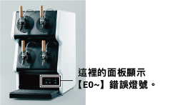

啤酒機常見問題FAQ
故障發生時請進行以下疑難排解。
電源插頭是否插入插座?
斷路器是否位於OFF(關閉)的位置?
氣管是否與啤酒機為連接狀態?
進氣口與與出風口有無髒汙或堵塞?
寶特瓶內是否已無啤酒?
出酒頭是否正確安裝在啤酒機內?
管線是否脫落或彎曲?
氣瓶總開關是否關閉?
故障問題集與對策
機器運作中而啤酒無法冷卻。
發生錯誤（請見面板的錯誤燈號顯示。）
進氣口阻塞。
出風口是否有物品阻塞。
確認異常狀況處理後，重啟電源。
請清洗空氣濾網。
請取出阻塞物。
無法注出啤酒。
氣瓶總開關關閉。
氣壓過低。
氣管是否未確實插入、斷裂、方向錯誤?
氣管是否損傷造成氣體外洩?
啤酒酒管脫落。
請開啟氣瓶總開關。
(這項沒翻到)
請確認氣管與啤酒機是否正確連接。
請更換氣管。
請重新插入啤酒酒管。
寶特瓶無法放入啤酒機內。
寶特瓶插入孔內的積水凍結。
寶特瓶插入孔內有異物。
請倒入溫水將冰塊溶解。
請將異物取出。
注出啤酒時泡沫過多。
啤酒酒管未確實插入。
啤酒酒管乾燥。（寶特瓶取出後立即）
碳酸氣瓶的減壓閥壓力設定過高。
注出的啤酒冰涼嗎?
是否放入預冷後的啤酒?
請重新插入啤酒酒管。
請少量發泡，重複操作10~20次。
減壓閥的壓力請設定至0.8kg/cm2。
請確認啤酒是冰涼的。
啤酒機電源無法開啟。
啤酒機有水滴或溢水。
d
接地線通過的機器週邊，啤酒機有噪音產生。
請將電源重新開啟，若狀況未改善，請於上班時間致電業務窗口。
請將接地線連接到其他位置。
錯誤燈號顯示

電源開啟時，若顯示錯誤燈號 【 E 】。
請確認以下的錯誤記號表示，確認異常狀況並處理後，再次將電源重新開啟。
E01～04
冷卻槽的溫度過高。
請放入預冷後(7℃以下)的寶特瓶。
E11～14
啤酒機內的散熱扇片溫度過高。
請清洗空氣濾網。
請遠離啤酒機周圍的熱源。
請保持啤酒機上方出風口順暢。
其他顯示
機器發生無法排解的故障。
請於上班時間致電台灣麒麟業務窗口。